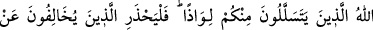
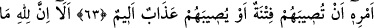
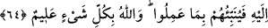

HZ. PEYGAMBER’İ
BİRBİRİNİZİ ÇAĞIRIR GİBİ
ÇAĞIRMAYIN
63. Peygamber’in çağırmasını, aranızda herhangi birinizin diğerini çağırmasıyla
bir tutmayın. İçinizden, birini siper edinerek sıvışıp gidenleri muhakkak ki Allah
bilmektedir. Bu sebeple, onun emrine aykırı davrananlar, başlarına bir belâ
gelmesinden veya kendilerine çok elemli bir azâb isâbet etmesinden sakınsınlar.
64. Bilmiş olun ki, göklerde ve yerde ne varsa Allah’ındır. O, sizin ne yolda
olduğunuzu iyi bilir. İnsanlar O’nun huzûruna döndürüldükleri gün yapmış
olduklarını onlara hemen bildirir. Allah, her şeyi hakkıyla bilendir.
“Peygamber’in çağırmasını,” yâni O’nun îtikad ve amel konusunda size olan emir ve
dâvetini “aranızda herhangi birinizin diğerini çağırmasıyla bir tutmayın.” Yâni yüz
çevirme, icâbette gevşek davranma ve izinsiz ayrılmayı câiz görme bakımından birinizin
birinize olan dâvetine kıyas etmeyin. Çünkü O’nun dâvetine icâbette acele etmek
vâcibdir. İzinsiz geri dönmek ise haramdır.
Bazıları burada mânânın şöyle olduğunu söylemişlerdir: Peygamber’e çağrınızı ve
O’nun adını söylemeyi, bazınızın bazınıza ismiyle çağırdığı gibi yüksek sesle ve
odaların arkasından “Ey Muhammed!”, “Ey Abdullah’ın oğlu!” şeklinde yapmayın. O’nu
Allah Teâlâ’nın da ifâde buyurduğu gibi “Ey Nebî, ey Rasûl” şeklindeki güzel
lâkaplarıyla çağırın.
Kâşîfî der ki: “Allah Teâlâ bütün peygamberlere bir alâmet ve işâretle hitâb etti;
Habîb-i edîbi olan Peygamberimiz’e ise ikram ile hitâb etti.”
Peygamberlerin babası olan Âdem’e, “Yâ Âdem!” diye hitâb etti
“Ey Peygamber” hitâbı ise Hz. Muhammed içindir.
Ebü’l-Leys Tefsir’inde der ki: “Bu âyette kendisine hayır öğreten kişiye saygı
duyulması gerektiği açıklanmaktadır. Çünkü Rasûlullah (s.a.) hayrı öğreten bir muallim